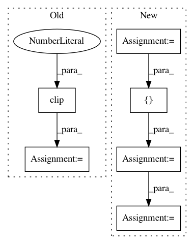

ad5beccf2b74dc39314843e8a970a891cbd52267,pyod/models/base.py,BaseDetector,predict_proba,#BaseDetector#Any#Any#,103
Before Change
pre_erf_score = (test_scores - self._mu) / (
self._sigma * np.sqrt(2))
erf_score = erf(pre_erf_score)
proba = erf_score.clip(0)
return proba
else:
raise ValueError(method,
"is not a valid probability conversion method")
After Change
test_scores = self.decision_function(X)
probs = np.zeros([X.shape[0], int(self.classes_)])
if method == "linear":
scaler = MinMaxScaler().fit(train_scores.reshape(-1, 1))
probs[:, 1] = scaler.transform(
test_scores.reshape(-1, 1)).ravel().clip(0, 1)
probs[:, 0] = 1 - probs[:, 1]
return probs
elif method == "unify":
// turn output into probability
pre_erf_score = (test_scores - self._mu) / (
self._sigma * np.sqrt(2))
erf_score = erf(pre_erf_score)
probs[:, 1] = erf_score.clip(0, 1).ravel()
probs[:, 0] = 1 - probs[:, 1]
return probs
else:
raise ValueError(method,
"is not a valid probability conversion method")
In pattern: SUPERPATTERN
Frequency: 3
Non-data size: 6
Instances
Project Name: yzhao062/pyod
Commit Name: ad5beccf2b74dc39314843e8a970a891cbd52267
Time: 2018-05-31
Author: yuezhao@cs.toronto.edu
File Name: pyod/models/base.py
Class Name: BaseDetector
Method Name: predict_proba
Project Name: pyannote/pyannote-audio
Commit Name: abbfdc5b04ec1824e42cebb472626d234ff7bd36
Time: 2017-01-09
Author: bredin@limsi.fr
File Name: scripts/speaker_embedding.py
Class Name:
Method Name: test
Project Name: AIRLab-POLIMI/mushroom
Commit Name: 07d4cb7949c4fc33fddbdaefabe43c0e5b7157f2
Time: 2017-10-02
Author: carloderamo@gmail.com
File Name: examples/deep_fqi_atari/output_analysis.py
Class Name:
Method Name: